Pulsefire
Pulsefire is a series of Parallel Universe skins in League of Legends. Set in a dystopian future after the Cog Era, it features champions augmented by cybernetic enhancements and equipped with Chrono technology.
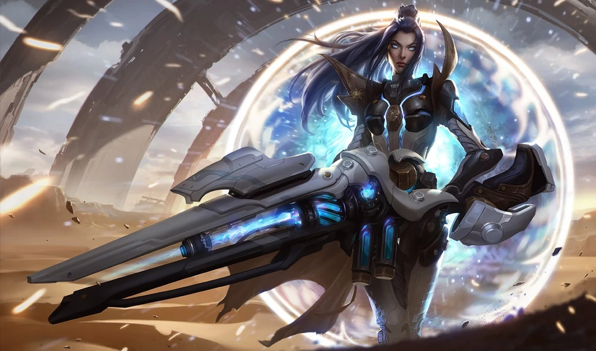
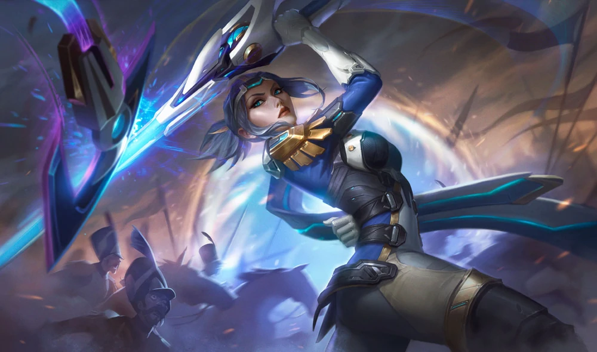
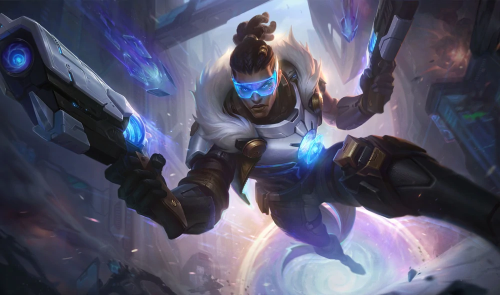
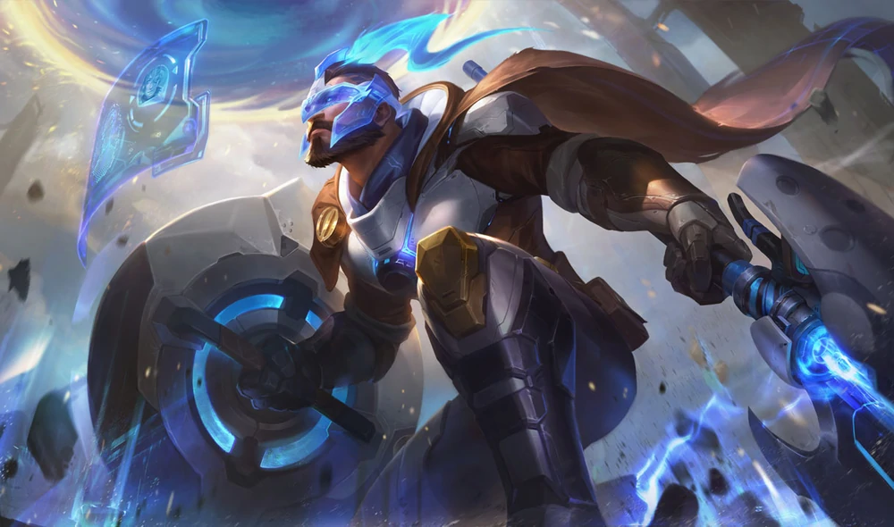
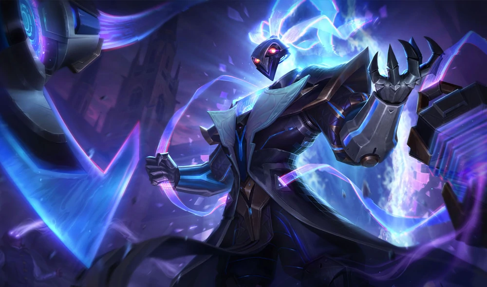
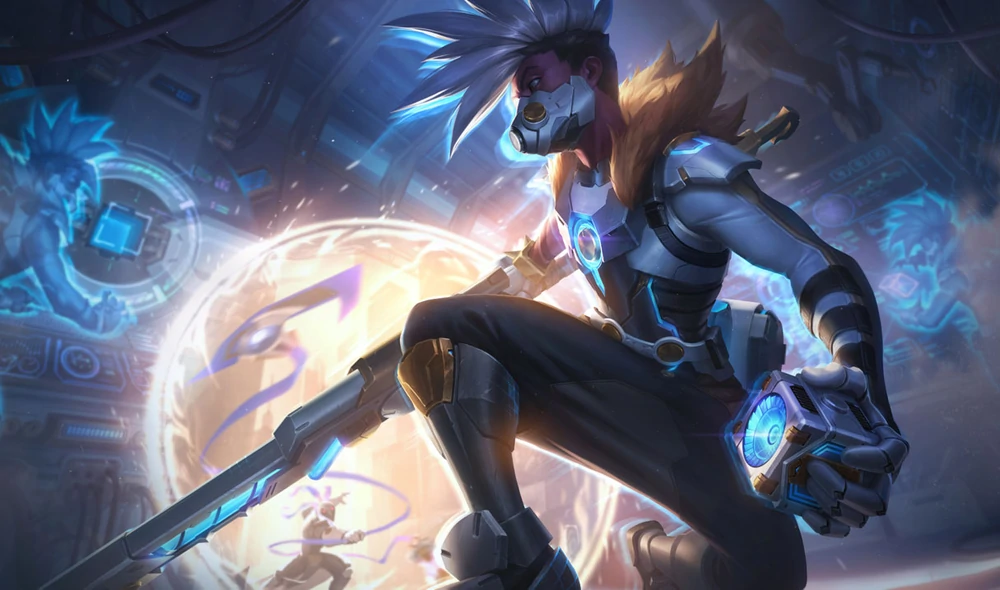
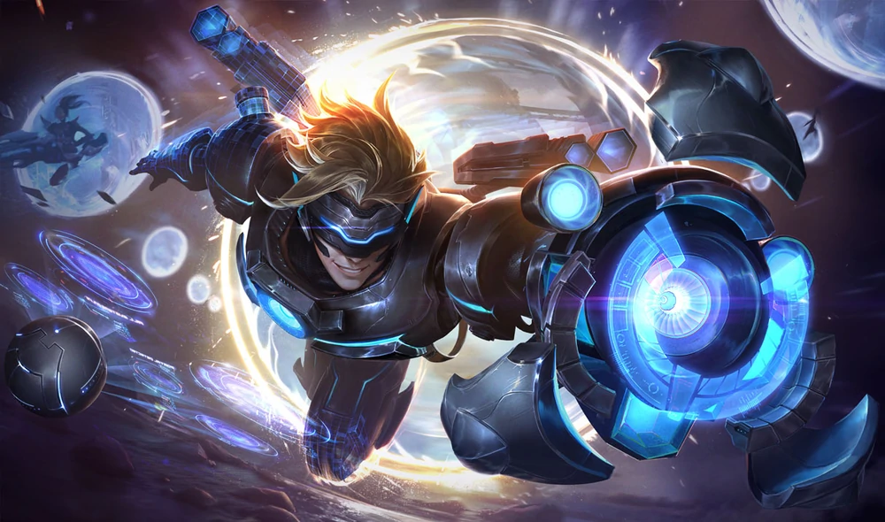
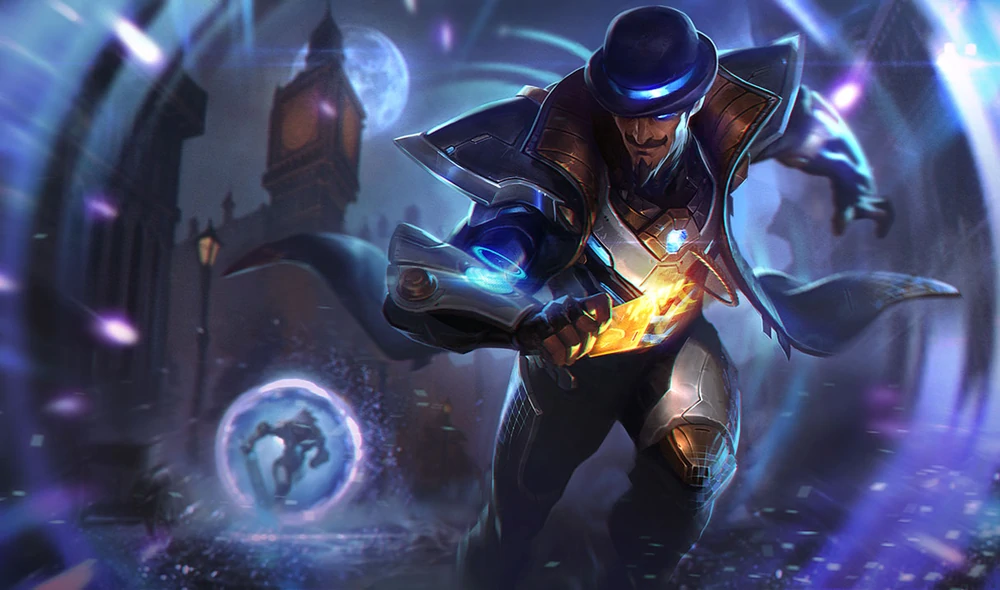
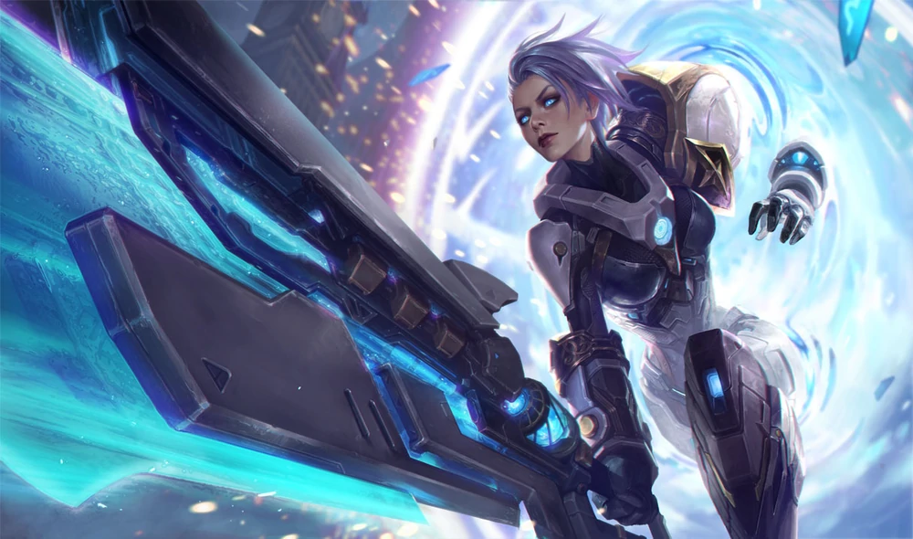
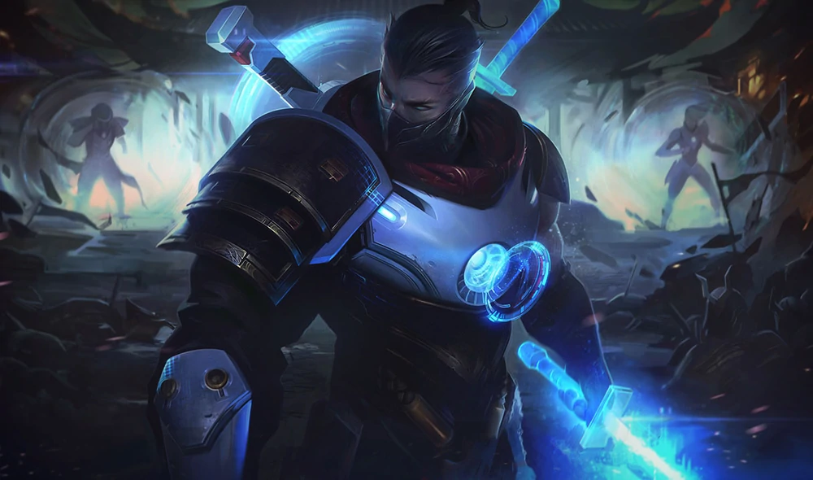
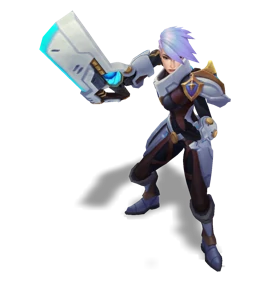
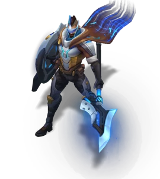
Pulsefire Caitlyn
A legendary chrono-law enforcer feared in every age, Caitlyn's mission is to protect the fragile enigma that is time. Those who dare threaten its integrity inevitably find themselves firmly locked in the sights of her temporal plasma blaster.Pulsefire Fiora
Fiora joined the Chrono-Enforcers at a young age under the tutelage of her father. When a conflict with a temporal fugitive left him disgraced, her future was thrown into doubt, but Fiora endured. Now, despite having reclaimed her family's reputation, and forged herself into an utter paragon of the Chrono-Enforcers, recent revelations have cast her into doubt once more, but this time about the Remembrancer's true purpose...Pulsefire Lucian
A dedicated chrono-enforcer, Lucian joined the Remembrancers when he lost his wife, Senna, in an errant Praetorian attack. Now, he searches for her while bringing justice to the reckless time travelers who would cavalierly tear holes in space-time.Pulsefire Pantheon
The sole survivor from a timeline devoured by Praetorians, Pantheon refused to succumb when the marauders ran him through and left him for dead. He now dons the Pulsefire suit to hunt down those who would dare risk creating the anomalies that unleash the robotic hordes upon time and space.Pulsefire Thresh
As head of the Remembrancers, Thresh usually remains behind the scenes pulling the chains of time rather than stepping into the stream himself. Yet recent events have caused him to leave his temporal citadel, bringing his pulsefire lantern to bear.Pulsefire Ekko
A time fugitive who built his Pulsefire suit from scratch, Ekko improved on the Remembrancers' technology, crafting a modified Chronobreak device that allows him to make short temporal jumps, create time breaks within a singular timeline, and to collapse them all into a single, anomaly-free singularity.Pulsefire Ezreal
Temporal fugitive and time-hopping explorer extraordinaire, Ezreal leaps across disparate realities searching for interesting technology to acquire. He is responsible for countless paradoxes and is currently wanted by the dystopian Remembrancers, who hunt him relentlessly.Pulsefire Twisted Fate
Swindling his way past the chrono-enforcers, Twisted Fate has made himself known by pulling off grand heists, across various timelines. Always just moments ahead of the law, with stolen riches in his pocket, he knows the alleyways of time make for the quickest of getaways…Pulsefire Riven
A worshipper of temporal purity, Riven knows there are many others who would rather see time manipulated in their favor. These heretics give her blade purpose—she can only find true solace in eliminating all who would disturb the natural order.Pulsefire Shen
Over the millennia, Shen has been called many names: warlord, trespasser, conqueror. Even so, his mission to build an army for the ages seems never-ending. Seeking only the smartest and the strongest to join his ranks, he remains untroubled by emotion, casting his timeless gaze over those with hidden potential.